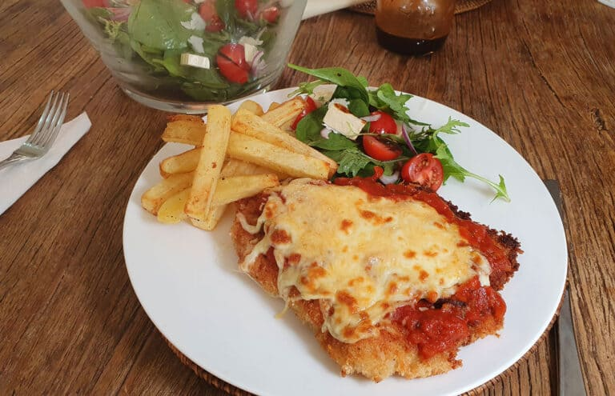

Chicken Parma

Description
The Aussie Chicken Parma, a beloved staple in Australian pub cuisine, is a hearty dish that features a breaded and fried chicken schnitzel topped with rich tomato sauce and melted cheese.
Often, mozzarella or cheddar is used, creating a gooey, savory layer over the crispy chicken.
This combination of textures and flavors makes the parma both comforting and satisfying, appealing to a wide range of palates.
Typically served with a side of golden fries and a fresh garden salad, the Chicken Parma offers a balanced meal with both indulgent and light elements. The dish can also be
customized with various toppings such as ham, bacon, or even a spicy sauce to add a personal touch.
It's a go-to choice for a casual, delicious meal, reflecting the laid-back yet hearty eating culture of Australia.
Ingredients
- 4 boneless chicken breasts
- Salt and black pepper, to taste
- 300 g (2 cups) plain flour
- 120 g (2 cups) panko breadcrumbs
- 4 large eggs
- 250 ml (1 cup) grapeseed oil, for pan-frying
- 750 ml (3 cups) tomato passata
- 450 g ball of mozzarella, thinly sliced
- 50 g (½ cup) grated parmesan cheese
- Basil leaves, to garnish
- Salad and chips, to serve
Steps
- Cut open the chicken breasts lengthways to butterfly them, then place between 2 sheets of baking paper and beat out lightly until about 1-cm thick. Season the chicken on both sides with salt and pepper.
- Place the flour, breadcrumbs and eggs in separate bowls, then lightly beat the eggs. Dust each breast in the flour and shake off the excess, then dip in the egg and let the excess drip off. Place in the breadcrumbs and press to firmly coat all over.
- Preheat the oven grill to medium–high. Heat the oil in a large frying pan over medium–high heat. Add the crumbed chicken, in batches if necessary and cook for about 2 minutes on each side or until golden. Transfer to a baking tray and top each breast with some tomato passata, a few slices of the mozzarella, salt and pepper and some parmesan.
- Place under the grill and cook for 5 minutes or until the cheese and golden and bubbling. Scatter with a few basil leaves and serve with salad and chips.